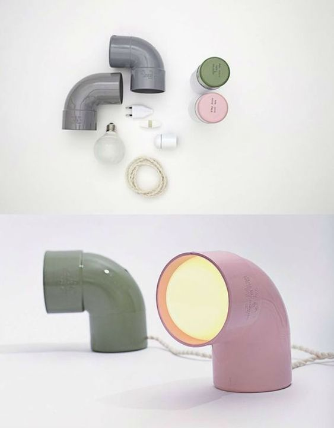
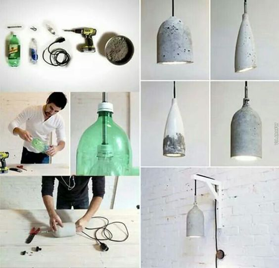

Sobre
Nosotros
Somos apasionado del diseño, por lo que personalmente opinamos que diseño y
ecología deberían ir siempre ligados.

Este proyecto nace a raíz de una de las grandes problemáticas que tenemos hoy en día en el mundo, creada por el aumento vertiginoso de residuos perjudiciales para el medio ambiente de las últimas décadas. El objetivo es buscar otras soluciones para reutilizar los residuos existentes y reducir la producción de nuevos.
La filosofía de la empresa consiste en dar otra vida a los residuos de forma creativa, convirtiéndolos en objetos de valor a través de la unión entre diseño y ecología.
Por lo que ofrecemos un producto exclusivo y único, ya que está creado mediante la descontextualización de materiales en desuso. Dándole una nueva funcionalidad, por lo que no puede haber dos piezas iguales, cada una de nuestras piezas son únicas e irrepetibles.

Upcycling
El Upcycling es un término acuñado recientemente, también conocido como supra-reciclaje, que consiste en aprovechar materiales reciclables para crear productos que tienen un mayor valor que el que tenía el material original. O, lo que es lo mismo: transformar residuos en objetos de valor, dándoles de este modo una nueva función utilitaria.
No solo es una corriente interesante, es una corriente necesaria, ya que reduce la necesidad de nuevas materias primas para crear nuevos productos. Además, si nos evitamos el proceso de transformar estas materias primas en otros materiales (como, por ejemplo, sucede con el plástico y el cristal, entre otros) se ahorran los costes de producción y la energía que se dedicaría a ello, lo que hoy en día es una de las principales causas de contaminación.
Las crecientes tendencias de utilizar materiales sostenibles están teniendo una gran aceptación entre el público. No es de extrañar, ya que el consumidor final no solo encuentra el producto atractivo por su valor diferenciador, sino que además cuenta con el valor añadido de estar contribuyendo con el bienestar del planeta y dando una segunda vida a un material que probablemente, si no, no la tendría. Es como adquirir un producto que tiene una gran historia detrás, aunque su nueva vida acabe de comenzar.

Las 3R's
Es una regla para cuidar el medio ambiente, específicamente para reducir el volumen de residuos o basura generada. Para nosotros es muy importante cumplir con esto, por lo que nuestra marca y productos están basado en estas tres reglas.
-
Reducir
con nuestros productos pretendemos reducir la utilización de materias primas para crear objetos nuevos.
-
Reutilizar
Esta es la base principal de nuestra marca. Reutilizamos objetos en desuso, dándoles una segunda vida útil, descontextualizándolos y ofreciéndoles otra función utilitaria.
-
Reciclar
las partes que no podemos aprovechar de dichos objetos las reciclamos, separándolos y llevándolos a puntos limpios.